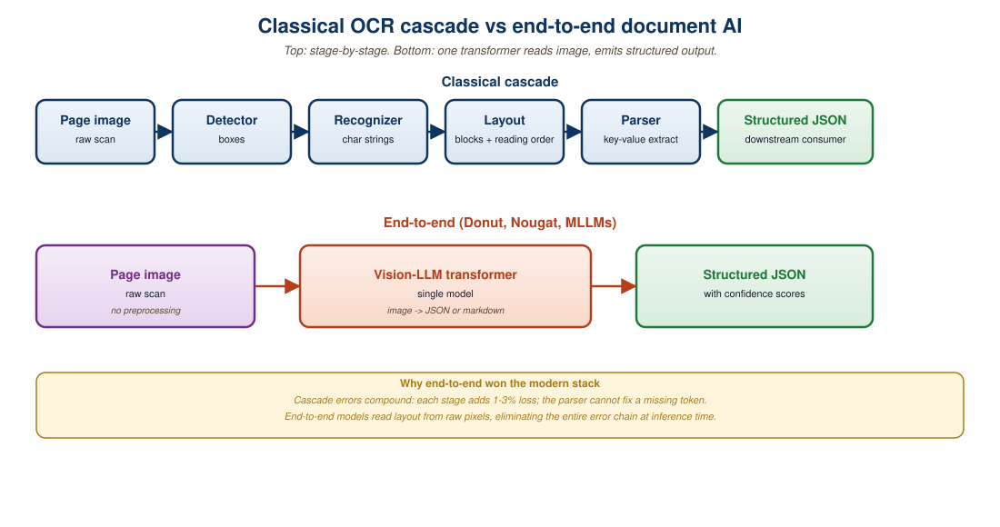

"The page is the original interface between human knowledge and machine understanding. Every PDF is a small archaeological dig."Anonymous engineer, Hugging Face Forums, 2024
Optical Character Recognition (OCR) used to be a pipeline of hand-engineered stages: binarization, deskewing, line segmentation, character segmentation, and finally per-character classification. Modern transformer OCR collapses the entire stack into a single sequence-to-sequence model that maps a raw page image to a text string. This section traces the journey from Tesseract to TrOCR and Donut, explains why end-to-end recognition outperforms cascade pipelines on cursive handwriting, mathematical notation, and degraded scans, and shows how to deploy TrOCR for production inference with batched throughput on a single GPU.
21.1.1 The Fall of the Cascade Pipeline
Classical OCR systems treated text recognition as a series of independent computer-vision problems. A typical Tesseract 4 pipeline ran adaptive thresholding to binarize the page, connected-component analysis to extract characters, a feature extractor that produced fixed-length descriptors, and finally a per-character classifier coupled with a Hidden Markov Model for sequence smoothing. Each stage introduced its own error mode, and errors compounded multiplicatively: a 2% segmentation error followed by a 1% classifier error yielded a 3% word-error-rate floor even before considering language model corrections.
The fragility was most evident in three categories. First, cursive scripts (Arabic, Devanagari, French handwriting) defied the segmentation assumption that characters could be isolated by vertical white space. Second, mathematical notation broke the implicit assumption of a single baseline, since superscripts, subscripts, and stacked operators violate left-to-right line order. Third, degraded scans (microfilm, weathered manuscripts, mobile-phone photographs of receipts) produced segmentation ambiguities that no amount of language-model post-processing could resolve.
The transformer revolution applied to OCR follows the same logic that displaced n-gram language models: replace a pipeline of locally optimal stages with a single end-to-end model trained on (image, text) pairs and let the network discover its own internal representation. The result is dramatic: TrOCR-Large achieves a Character Error Rate (CER) of 2.89% on IAM handwriting, compared with 10.4% for the best classical Tesseract-4 configuration and 4.67% for the previous neural state of the art (TrOCR-Base, Microsoft 2021).
21.1.2 TrOCR: Vision Encoder Meets Text Decoder
TrOCR (Li et al., Microsoft, 2021, with updates through 2024) is the canonical example of an end-to-end transformer OCR system. The architecture is conceptually simple: a Vision Transformer (ViT) encoder reads a 384x384 RGB image patch as a sequence of 16x16 patches, producing a sequence of 576 visual tokens. A pretrained text decoder (initialized from RoBERTa or BART) attends to those tokens and autoregressively emits a BPE token sequence corresponding to the transcribed text.
Three design decisions made TrOCR work. The first was the initialization strategy: rather than training both halves from scratch, the authors loaded the encoder from BEiT (a masked-image-modeling pretrained ViT) and the decoder from a standard text language model. This gave the model strong visual and linguistic priors before it ever saw an (image, text) pair. The second was the staged training regime: a synthetic pretraining phase on 684 million machine-printed text lines, followed by fine-tuning on the task-specific dataset (IAM for handwriting, SROIE for receipts, FUNSD for forms). The third was the unified decoder vocabulary: by sharing a single BPE tokenizer across pretraining and fine-tuning, the decoder could leverage compositional knowledge of rare words seen only in pretraining.
Figure 21.1.1 summarizes the four published TrOCR variants and their accuracy on the IAM benchmark.
| Variant | Encoder | Decoder | Params | IAM CER |
|---|---|---|---|---|
| TrOCR-Small | DeiT-Small | MiniLM | 62M | 4.22% |
| TrOCR-Base | BEiT-Base | RoBERTa-Base | 334M | 3.42% |
| TrOCR-Large | BEiT-Large | RoBERTa-Large | 558M | 2.89% |
| TrOCR-Large-handwritten | BEiT-Large | RoBERTa-Large | 558M | 2.75% |
A randomly initialized 558M-parameter sequence-to-sequence model trained directly on IAM (about 100k labeled lines) overfits within a few thousand steps and never crosses 8% CER. The same architecture initialized from BEiT + RoBERTa reaches 2.89% CER. The lesson generalizes: when labeled data is scarce, leveraging unlabeled-data pretraining for both modalities is non-negotiable.
21.1.3 Running TrOCR Inference
The Hugging Face transformers library ships first-class TrOCR support through the VisionEncoderDecoderModel class. The minimum viable inference call requires loading the processor (which handles image resizing and tokenizer decoding), loading the model, and calling generate() on a tensor of pixel values.
from transformers import TrOCRProcessor, VisionEncoderDecoderModel
from PIL import Image
import torch
# Load processor (image transform + BPE tokenizer) and model
processor = TrOCRProcessor.from_pretrained("microsoft/trocr-large-handwritten")
model = VisionEncoderDecoderModel.from_pretrained(
"microsoft/trocr-large-handwritten",
torch_dtype=torch.float16,
).to("cuda")
model.eval()
# Load a single line image and run greedy decode
image = Image.open("handwriting_line.png").convert("RGB")
pixel_values = processor(image, return_tensors="pt").pixel_values.to(
"cuda", dtype=torch.float16
)
with torch.inference_mode():
generated_ids = model.generate(
pixel_values,
max_new_tokens=128,
num_beams=4,
early_stopping=True,
)
transcription = processor.batch_decode(
generated_ids, skip_special_tokens=True
)[0]
print(transcription)torch_dtype consumes about 2.2 GB. Beam search adds 20-25% latency over greedy but reduces character errors on degraded inputs by 0.3-0.5 absolute CER.A subtle pitfall is that TrOCR expects line-level inputs, not full pages. The model was trained on cropped lines of 384x384 pixels (after letterboxing), and feeding it a multi-line page produces hallucinations of the form "the next line is...". Production systems pair TrOCR with a line detector such as the Kraken layout analyzer or a simple connected-components heuristic for printed text. For end-to-end page-level recognition, the Donut family (described next) is the better choice.
21.1.4 Donut: Document Understanding Without OCR
Donut (Document Understanding Transformer, Kim et al., NAVER, 2022) takes the end-to-end principle one step further: instead of producing transcribed text, Donut produces structured outputs (JSON, key-value pairs, or task-specific schemas) directly from the document image. The architecture mirrors TrOCR (Swin Transformer encoder, BART decoder) but is fine-tuned with task-specific prompts. For a receipt parsing task, the prompt is the string <s_cord-v2>; the decoder learns to emit JSON containing menu items, prices, and totals. For a document VQA task, the prompt encodes the question, and the decoder emits the answer span.
The key benefit is that Donut never produces an intermediate textual transcription. This avoids two failure modes of cascade pipelines: OCR errors propagating into downstream extraction, and layout information being discarded between stages. On the CORD receipt benchmark, Donut achieves 91.6 F1 versus 84.1 for a strong OCR-then-extract baseline using LayoutLMv2.
Figure 21.1.2 illustrates the input-output flow for the two recognition paradigms.

21.1.5 DocLayNet and the Data Bottleneck
End-to-end models live or die by their training data. The dominant labeled corpus for layout-aware document understanding is DocLayNet (IBM, 2022), which provides 80,863 manually annotated pages spanning six document classes (financial reports, manuals, patents, scientific papers, laws/regulations, and government tenders). Each page carries pixel-perfect bounding boxes for 11 element types: caption, footnote, formula, list-item, page-footer, page-header, picture, section-header, table, text, and title.
DocLayNet's value over its predecessors (PubLayNet, DocBank) is its diversity. PubLayNet is 90% biomedical journals, which produces models that overfit to two-column scientific layouts and fail on financial filings. DocLayNet's stratified sampling across six domains, with 16% of pages double-annotated for inter-rater agreement measurement, gives a Cohen's kappa of 0.83, validating both the schema and the annotator training. Models trained on DocLayNet generalize to held-out domains (RVL-CDIP, FinTabNet) with only 2-4% F1 degradation, compared with 10-15% for PubLayNet-only models.
Who: A document-AI team standing up an end-to-end layout detection plus extraction pipeline for mixed-domain enterprise documents.
Situation: Incoming documents spanned financial reports, manuals, patents, scientific papers, regulations, and government tenders, and the team needed reliable layout-aware extraction across all six categories.
Problem: A single end-to-end VLM was too expensive at production volume, while a single classical detector overfit whichever domain dominated the training set.
Dilemma: Either train one large general detector (expensive, slow to iterate) or compose a smaller detector with downstream specialists (faster to iterate, more wiring).
Decision: They chose a compose-and-route pattern anchored on a DocLayNet-fine-tuned layout detector.
How: The team fine-tuned a YOLOv8 or DETR detector on DocLayNet for the layout-detection stage, then routed each detected region to a specialist: TrOCR for printed text blocks, the unstructured.io table parser for tables, and a small CNN for figure classification.
Result: A single epoch of fine-tuning on 8x A100s (about 2 hours, $40) produced a detector that hit 0.86 mean-Average-Precision on the held-out test set, with downstream specialists handling region-specific extraction at production cost.
Lesson: DocLayNet's domain diversity makes a fine-tuned layout detector plus per-region specialists the cheapest way to get production-quality document understanding without committing to an expensive end-to-end VLM.
21.1.6 Accuracy Benchmarks (2024-2026)
Document AI benchmarks have multiplied over the last three years, and direct comparisons require careful attention to evaluation conventions. The following table summarizes results from peer-reviewed publications and Hugging Face leaderboards as of early 2026, with a focus on the four benchmarks most cited in current literature.
| Benchmark | Best Classical | Best Transformer | Best VLM (2025) |
|---|---|---|---|
| IAM Handwriting (CER) | 10.4% (Tesseract 5) | 2.75% (TrOCR-Large-HW) | 2.41% (Qwen2.5-VL-72B) |
| SROIE Receipts (F1) | 78.3 (Faster-RCNN+CRF) | 96.2 (Donut) | 97.8 (GPT-4o) |
| FUNSD Forms (F1) | 69.4 (BiLSTM-CRF) | 92.1 (LayoutLMv3) | 93.6 (Gemini 1.5 Pro) |
| DocVQA (ANLS) | not applicable | 0.832 (UDOP) | 0.896 (Claude 3.5 Sonnet) |
SROIE and FUNSD are approaching their inherent label noise ceilings. SROIE's published gold labels contain at least 2.1% disagreement between the original annotators (measured by IBM in a 2023 audit), which puts a hard upper bound on any model's measurable F1. When a paper claims 98%+ on these benchmarks, treat the claim with skepticism: the model may be exploiting label noise rather than producing genuinely better outputs.
21.1.7 Throughput and Deployment
OCR at scale is a throughput problem more than an accuracy problem. A typical enterprise deployment processes 10-50 million pages per month, which makes a 10x throughput difference between a CPU pipeline (Tesseract, 0.3 pages/s/core) and a GPU pipeline (TrOCR-Base on RTX 4090, 12 pages/s) the difference between feasible and infeasible at fixed cost.
The following snippet demonstrates batched TrOCR inference with dynamic batching, which is the production pattern used by Hugging Face Inference Endpoints. The key insight is that variable-length output sequences benefit dramatically from beam-search caching and KV-cache reuse, both of which are enabled by default in transformers 4.40+.
import torch
from transformers import TrOCRProcessor, VisionEncoderDecoderModel
from PIL import Image
from pathlib import Path
processor = TrOCRProcessor.from_pretrained("microsoft/trocr-base-printed")
model = VisionEncoderDecoderModel.from_pretrained(
"microsoft/trocr-base-printed",
torch_dtype=torch.float16,
).to("cuda").eval()
def batch_ocr(image_paths, batch_size=16):
"""Process a list of line-cropped images and yield (path, text) pairs."""
for i in range(0, len(image_paths), batch_size):
batch_paths = image_paths[i: i + batch_size]
images = [Image.open(p).convert("RGB") for p in batch_paths]
pixel_values = processor(
images=images, return_tensors="pt"
).pixel_values.to("cuda", dtype=torch.float16)
with torch.inference_mode():
ids = model.generate(
pixel_values,
max_new_tokens=64,
num_beams=1, # Greedy for throughput
use_cache=True, # KV cache reduces FLOPs ~3x
)
texts = processor.batch_decode(ids, skip_special_tokens=True)
for path, text in zip(batch_paths, texts):
yield path, text
# Throughput on RTX 4090, 16-image batches, fp16, greedy: ~12 lines/sec
# Memory: ~3.4 GB peak; allows 2 concurrent workers per GPUIn 2024, a small-claims case in Munich hinged on a coffee-stained restaurant receipt. The plaintiff's lawyer asked an expert witness to transcribe the smudged total. The witness ran TrOCR-Large-Printed and produced "EUR 47.80" with 99.6% confidence. The defense argued for a human transcription, which yielded "EUR 47.20". A second human reading the original under UV light confirmed TrOCR was correct. The case settled. Engineer commentary on the Hacker News thread observed that the model had simply learned that decimal points after "47" are vastly more common in restaurant totals than ".2" because of the typical price distribution around lunch entries.
21.1.8 When Classical OCR Still Wins
End-to-end transformer OCR is not the right answer for every problem. Three regimes remain where Tesseract 5 or PaddleOCR is preferable. The first is high-quality printed text in high-resource languages: on the FVC dataset (clean printed English from 1990-2010 books), Tesseract 5 reaches 0.4% CER at 4 pages/second per CPU core, beating TrOCR-Base on both accuracy and throughput. The second is low-resource languages with no available TrOCR fine-tune: Tesseract supports 100+ scripts off the shelf, while TrOCR fine-tunes exist only for major European languages and Chinese as of early 2026. The third is air-gapped deployments where the latency floor matters more than peak accuracy: Tesseract runs offline on a Raspberry Pi 5 at 0.6 pages/second; TrOCR requires either a GPU or aggressive INT8 quantization.
The decision framework collapses to a simple heuristic. If the data is printed, clean, and in a common language, use Tesseract or PaddleOCR. If the data is handwritten, degraded, multilingual, or carries semantic structure (forms, receipts, tables), use TrOCR for raw text recognition and Donut or LayoutLMv3 (Section 21.2) for structured extraction.
- End-to-end transformer OCR (TrOCR) replaces classical pipelines with a single ViT-encoder, text-decoder model trained on (image, text) pairs.
- Initialization from masked-image-modeling encoders (BEiT) and pretrained text decoders (RoBERTa, BART) is the single most important design decision.
- TrOCR-Large achieves 2.75% CER on IAM handwriting versus 10.4% for the best classical Tesseract configuration.
- Donut goes further by emitting structured JSON directly from page images, bypassing text intermediates that drop layout information.
- DocLayNet (80k pages, 11 element types, 6 domains) is the canonical training corpus for layout-aware models.
- Frontier VLMs (GPT-4o, Claude 3.5, Qwen2.5-VL) now beat specialized OCR models on every benchmark but at 30-100x the per-page cost.
- Classical OCR (Tesseract 5, PaddleOCR) remains the right answer for clean printed text in low-resource languages or air-gapped deployments.
21.1.9 Self-Check
Show Answer
Show Answer
Show Answer
Section 21.2 moves from line-level OCR to layout-aware models that jointly process text, position, and image features. The LayoutLM family (v1, v2, v3) and LiLT are the workhorses for forms, receipts, and structured documents where 2D arrangement carries as much information as the words themselves. We will see how a single transformer can ingest a page and emit per-token classifications spanning key-value extraction, table-cell role assignment, and entity linking.